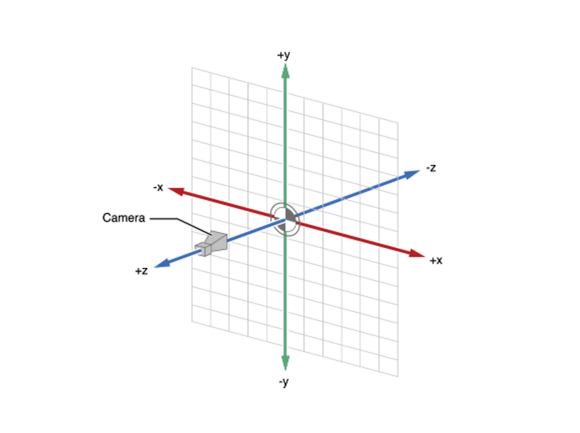

我们通过ARKit的相机(ARCamera)捕获现实世界图像,利用SceneKit来在图像中展示3D模型
SceneKit中常用类及作用
- ARCamera:用于捕获摄像头画面
- ARSCNView:视图类用于展示由摄像头捕捉到的现实世界3D场景,继承自
SceneKit中的SCNView用于展示3D场景,SCNView继承自UIView视图
- ARSession: 会话,搭建3D场景
- ARKit:用于将现实世界转为3D场景
- SceneKit:用于将虚拟物体构建在3D场景中
- SCNNode:每个虚拟物体都是一个节点,其作为主节点构成了
SCNScene场景,无数个场景构成3D世界
ARSession
通过ARSession来沟通ARSCNView和ARCamera
我们需要给ARSession会话指定一个会话追踪设置(ARConfiguration),用其来追踪相机在3D世界的位置特征和场景
苹果建议使用ARWorldTrackingConfiguration，该类只支持A9之后芯片
ARWorldTrackingConfiguration与ARFrame
ARWorldTrackingConfiguration得到手机在世界中的位置数据交给ARSession，而相机在的位置数据即ARFrame
用ARSession的currentFrame属性来获取当前位置信息

ARConfiguration捕捉相机3D位置的意义就在于能够在添加3D物体模型的时候计算出3D物体模型相对于相机的真实的矩阵位置
ARKit API支持两种主配置，即只追踪设备定位的ARConfiguration，以及进一步追踪设备位置并检测真实世界表面ARWorldTrackingConfiguration。
ARKit实战
完整的ARKit环境必须需要:
ARSCNView、ARSession、ARSessionConfiguration
1.初始化 搭建AR环境
2.开启AR扫描
苹果推荐将开启的代码写到viewWillAppear而不是viewDidLoad
3.进行自定制操作
默认情况下，节点SCNNode的x/y/z位置是(0,0,0),也就是摄像头所在的位置，每一个ARSession在启动时，摄像头的位置就是3D世界的原点，而且这个原点不再随着摄像头的移动而改变，是第一次就永久固定的